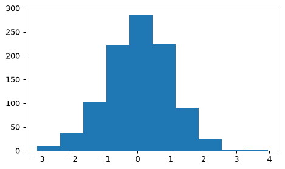
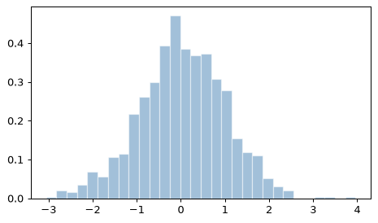
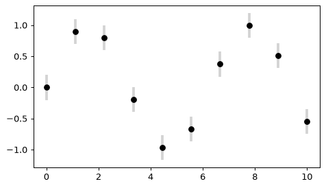
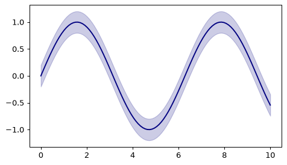
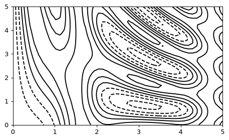
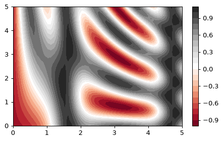
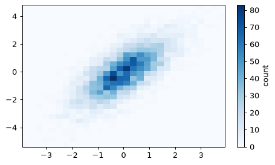

📖 対応する教科書：VanderPlas, Python Data Science Handbook（オンライン版）
- Handbook 4.03 Visualizing Errors
- Handbook 4.04 Density and Contour Plots
- Handbook 4.05 Histograms, Binnings, and Density
①
ヒストグラム：分布を見る
plt.hist
データがどの値にどれくらい集まっているか（分布）を見るのがヒストグラムです。
np.random.seed(1) data = np.random.randn(1000) plt.hist(data)

bins（区間の数）、density（面積を1にそろえる）などで見た目を調整できます。
plt.hist(data, bins=30, density=True, alpha=0.5, color='steelblue', edgecolor='white')

数値だけ欲しいときは、描かずにnp.histogramで個数と区間の境界が得られます。
counts, edges = np.histogram(data, bins=5) print(counts) print(edges.round(2))
[ 47 326 510 114 3]
[-3.05 -1.65 -0.25 1.15 2.56 3.96]
🍎 かんたん説明
ビンの数が少ないと大づかみ、多いと細かくなりすぎます。いくつか試して見やすいものを選びます。
💻 ミニ練習：ヒストグラム
dataを20区間のヒストグラムで描いてください。
plt.hist(data, bins=20)
binsで区間の数を指定します。
②
誤差棒：errorbar
データのばらつきを示す
測定値には誤差があります。plt.errorbarは、点と一緒に誤差の範囲を描きます。
x = np.linspace(0, 10, 10) y = np.sin(x) dy = 0.2 plt.errorbar(x, y, yerr=dy, fmt='o', color='black', ecolor='lightgray', elinewidth=3, capsize=0)

fmt='o'は点の形式、yerrは縦方向の誤差、ecolorは誤差棒の色です。
連続的な誤差の範囲は、plt.fill_betweenで帯として描けます。
xx = np.linspace(0, 10, 100) yy = np.sin(xx) plt.plot(xx, yy, color='navy') plt.fill_between(xx, yy - 0.2, yy + 0.2, color='navy', alpha=0.2)

🍎 かんたん説明
点には誤差棒（errorbar）、連続した線には帯（fill_between）が向いています。
💻 ミニ練習：errorbar
x, y を丸い点で描き、縦の誤差を 0.5 にしてください。
plt.errorbar(x, y, yerr=0.5, fmt='o')
yerrに数または配列を渡します。
③
等高線と密度：contour
3つ目の値を線や色で表す
2つの変数 (x, y) に対して値 z がある関数は、等高線で表せます。
def f(x, y): return np.sin(x) ** 10 + np.cos(10 + y * x) * np.cos(x) x = np.linspace(0, 5, 50) y = np.linspace(0, 5, 40) X, Y = np.meshgrid(x, y) Z = f(X, Y) plt.contour(X, Y, Z, colors='black')

plt.contourf(X, Y, Z, 20, cmap='RdGy') plt.colorbar()

meshgridは、x と y の配列から全ての (x, y) の組み合わせの格子（2次元配列）を作ります。
X, Y = np.meshgrid([1, 2, 3], [10, 20]) print(X) Y
[[1 2 3]
[1 2 3]]
array([[10, 10, 10],
[20, 20, 20]])
2次元の分布（点の密度）は、plt.hist2dで四角形ごとの個数を色で描けます。
np.random.seed(2) m = np.random.multivariate_normal([0, 0], [[1, 1], [1, 2]], 5000) plt.hist2d(m[:, 0], m[:, 1], bins=30, cmap='Blues') plt.colorbar(label='count')

🍎 かんたん説明
等高線は地図の標高線と同じ。contourfは線のあいだを色で塗ります。
💻 ミニ練習：meshgrid
x = [0, 1]、y = [0, 1, 2] から格子 X, Y を作ってください。
X, Y = np.meshgrid(x, y)
Xの形は(3, 2)になります。
📝 確認クイズ
0 / 6
✏️ Questions are in English — answers are checked instantly.
Question 1
What does a histogram show?
Question 2
Which argument sets the number of intervals in plt.hist?
Question 3
What does density=True do in plt.hist?
Question 4
Which call draws points with vertical error bars?
Question 5
What does np.meshgrid([1, 2, 3], [10, 20]) return?
Question 6
How does contourf differ from contour?